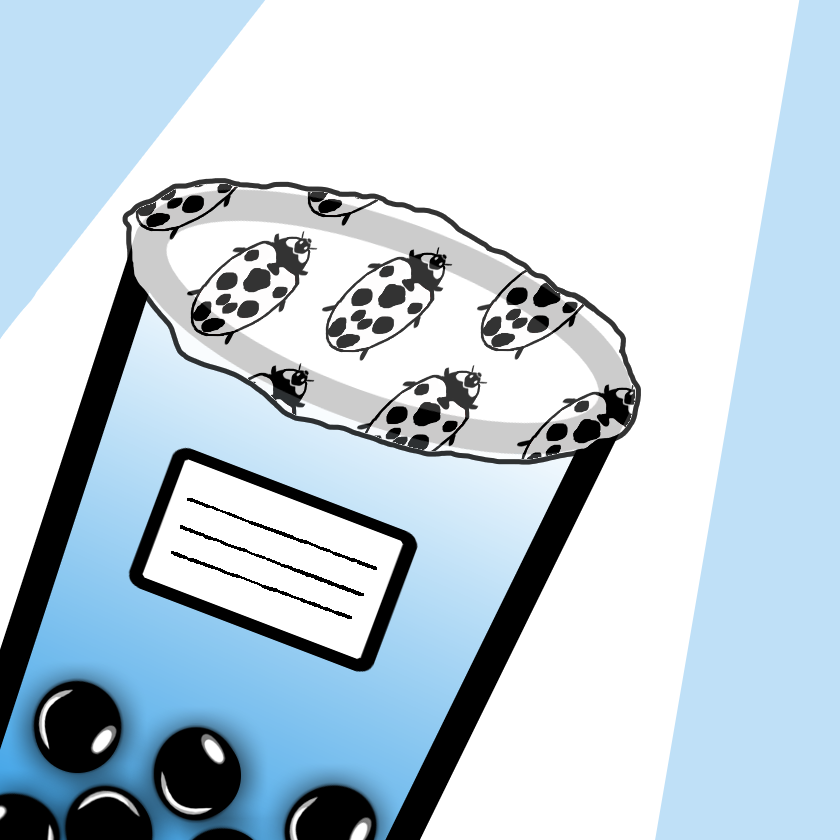
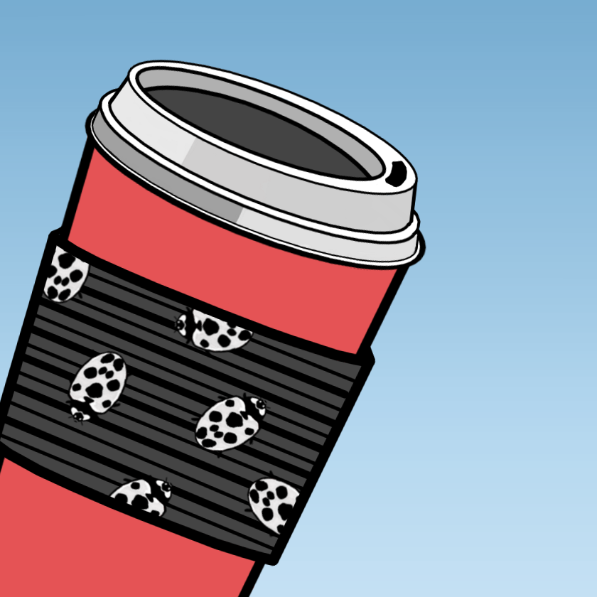

How Do You Eat an Elephant?
Whenever I was a kid stressing about a project or any impending todo my dad would always say: “How do you eat an elephant?” The punchline “one bite at a time” was always implied.
Making a game sure is like eating an elephant. I’ve been working on Nectar of the Gods on and off for about a year and 3 months now. I don’t think I’ve ever spent so much time on any single thing, it’s so surreal. I’m always reading and listening to any talks I can find by game developers and they are always saying things like:
"It’s a miracle when any game gets released."
or
"Making games is 20% bliss 80% agony."
Whenever I would hear this I’d be like yeah but making anything is hard and takes time right? It’ll be tough but it’s ok because I have PASSION. But holy shit I am so drained. It takes so much energy to stay focused and motivated. I don’t know how big game companies pull it off, where it takes like 5+ years to make a game. That’s like a very SOLID portion of someone’s entire lifetime. Your whole life could change like 5 times in that time period.
There is absolutely a sort of Stockholm Syndrome that sets in. Where the game becomes this like angel and devil on your shoulder. It’s all you can think about. The weight building as more of your time, blood, sweat, and tears are injected. It’s the center of your universe. Whenever I show it to someone and they're like “neat...” in my head I’m screaming NO DON’T YOU GET IT??? THESE PARTICLE EFFECTS ARE NEW! I USED 2D LIGHTING HERE!!!!!
There’s no separation. You try to remind yourself to take it day by day, bite by bite, and not let the magnitude of the project or your expectations crush you. ENJOY THE PROCESS. IT’S ALL ABOUT LEARNING. I think it’s especially hard for all the solo developers out there because you’re so in your own head. And with a team you at least get the joy of sharing the game with your team regardless of how many people end up playing the game.
As my meltdown frequency has increased the past few weeks I’m working to refocus myself on enjoying the process and savoring each bite. Step one being this cathartic blog post.
If you are struggling with anything right now don’t be afraid to give yourself a break, cook yourself a healthy meal, etc. We’ll make it to the other side. We need our wits preserved to do it all over again.